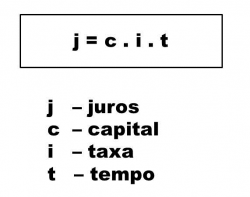

É um valor calculado com base no capital (dinheiro) em relação ao tempo total e a taxa de juros (%).
É calculado pela fórmula:
|  |
|
Capital : qualquer bem ou recurso capaz de gerar rendimento, através de sua aplicação. Taxa de juros : é o preço do “aluguel” do dinheiro por um determinado prazo. Tempo : período de tempo, no qual o juros é calculado, "decisivo" para o valor total sobre o capital aplicado.
Montante : Apesar de não aparecer nessa fórmula, é um conceito importante na matemática financeira. Montante significa o valor total da transação. |
|
Uma das principais características dos juros simples é que o seu valor não se altera ao passar dos meses, continua o mesmo juros,
|
voltar ao menu
|
|
Percebam, que a taxa de juros foi apresentada ao mês, já o tempo está estabelecido em anos Segundo as regras, ambos devem estar na mesma unidade de medida Por isso, não utilizaremos 4 anos, mas converteremos para meses: 4 anos = 48 meses 4 x 12 = 48 Agora sim, podemos continuar a conta. |
|
J= C * I * T J= 2.500 * 4/100 * 48 J= 2.500 * 0,04 * 48 J= 100 * 48 J= 4.800 Esses 4.800,00 foram os juros adquiridos após os 4 anos. Porém o enunciado quer saber o montante após esses 4 anos, ou seja, C+J , somaremos o capital aplicado mais o juros final M= C+J M= 2.500 + 4.800 M= 7.300 Ao final, temos um montante de R$7.300,00 |
|
JUROS COMPOSTO
|
Os juros compostos , também classificados de juros sobre juros , é o regime de capitalização mais utilizado, |
|
1) Na compra de um fogão, os clientes podem optar por uma das seguintes formas de pagamento:
A taxa de juros mensal para pagamentos não efetuados no ato da compra é de: a) 10% b) 12% c) 15% d) 18%
2) Em uma loja de eletro domésticos, uma tv de 50 polegadas, que custa R$6.000,00 está sendo
Determine:
3) Chico aplicou uma quantia de R$ 500,00 a juros simples durante 6 meses. A taxa de aplicação foi de 5% ao mês. O montante obtido foi de:
|